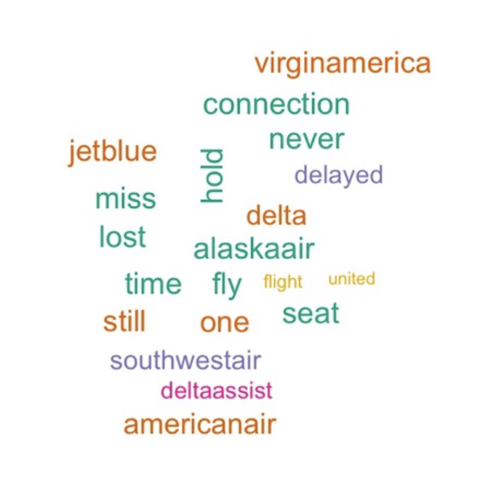

A self-motivated, innovative, and highly energetic M.S. Business Analytics candidate at Simon Business School (STEM-Certificated program with 36-month OPT). Proficient in R, Python, Stata, Tableau, and SQL Programming.
Creative and versatile performer with excellent analytical and communication skills.
A patentholder, a travelling enthusiast, a skydiving lover, and a 12-year pigeon raiser for racing competitions.
It is in early 2000s. You are hired as a senior analyst by a new U.S. car manufacturer, T (as a
shorthand), which is considering launching operations in Europe. In order to make the important
managerial decision, your team is assigned a task - estimating demand for cars and competitiveness
of the car market in Europe. As you are new to the market, the only data set available to you
is the one that is publicly available - the sales record of each car model produced by existing car
manufacturers in each European country between 1970 and 1999.

As a “product manager” of Kiwi, a major soft drink company. I own and sell "Kiwi Regular", and the product is doing well in the market. Mango, my major competitor, produces Mango Bubbles that is well-received in the market.
Should I launch Kiwi Bubbles? If yes, how to position Kiwi Bubbles in the market? Let's find out by clicking Full Story!
Based on online reviews of doctors of a particular specialty, plot the wordcloud of the 20 most frequently mentioned adjectives in the reviews for each specialty.
Construct the Vocabulary of words that occurr at least 10 times in a text. Construct cosine similarity under TCM matrix and PPMI matrix to compare paradigmatic association bewteen great and nice/ great and horrible.

Retrieved 3011 documents, each containing one Yelp review about a Las Vegas resturant called Mesa Grill. Implemented TDM matrix and NMF to project the terms and documents that related to the resturant.
Continued on the doctors'review case, use K-means to cluster the documents based on DocID.
Project 5
Trend Detection: Fast Trend and Slow Trend
Fast Trend: retrieve 12,895 text files, each containing a tweet randomly selected from one particular hour of the past. Explore the hidden topics from the documents to identify an international event of major political consequences.
Slow Trend: develop a scalable method to extract signals from the large corpus of Facebook posts so that early signs of food trends could emerge from your analysis. Construct time series of otential food trends, and detecting (abrupt) changes in those time series.

Create a text sentiment detection model via first composing a pos/neg sentiment vocabulary dictionary (6805 words), and adjust each vocabulary’s weight related to 1700 airline complaints by DocumentTermMatrix, LDA model and Topic Modeling.
Clean text, tokenize complaints, and compute sentiment index for each review; test the model and achieved 79.4% precision.
Upcoming...